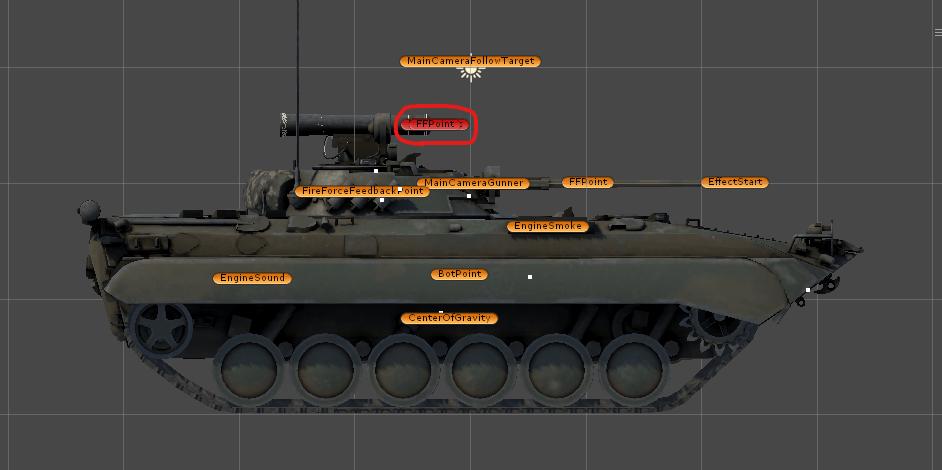

02-3. Multi-Fire (Old) - 多炮塔 （旧）
General 综合
Multi-Fire (Old) system is designed for one turret and one gun. 多炮塔（旧）系统被设计用于对应一个炮塔与炮管。
Child-Parent Relation 父子关系
Suppose we have an ATGM on the turret. We should SubTurret under Turret. Also you need to put SubGun under SubTurret and SubDym under SubTurret. 假设我们在炮塔下面有 ATGM，则我们需要将 SubTurret 放置于 Turret。此外，我们需要将 SubGun 放置于 SubTurret ，将 SubDym 放置于 SubTurret。
Property 属性
Relative Path 相对路径
You need to set the relative path of turret ,gun and dym. 你需要针对炮塔，炮管，炮管活动部分设置他的相对路径。
FFPoint / Effect Start Offset 开火位置偏移
The offset will decide where ffpoint and effect start are. In genereted prefab,you can see the red dumps indicates these points. 偏移值会决定开火位置。 在创建出来的预制体中，你可以看到这些虚节点。 
Tank Fire Param 开火设置
The structure is same as the ordinary one. 结构与普通的开火设置一样。
Turret Param 炮塔设置
The structure is same as the ordinary one. 结构与普通的炮塔设置一样。